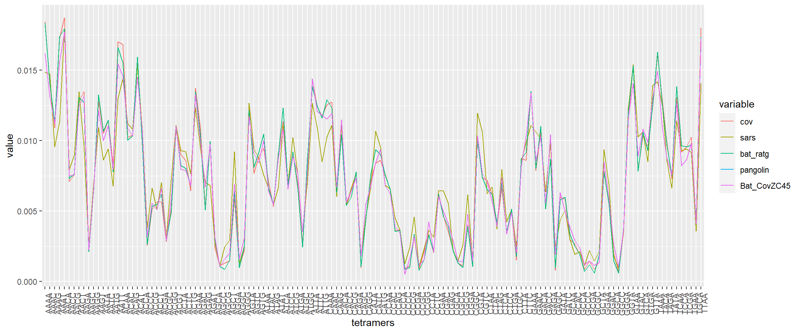
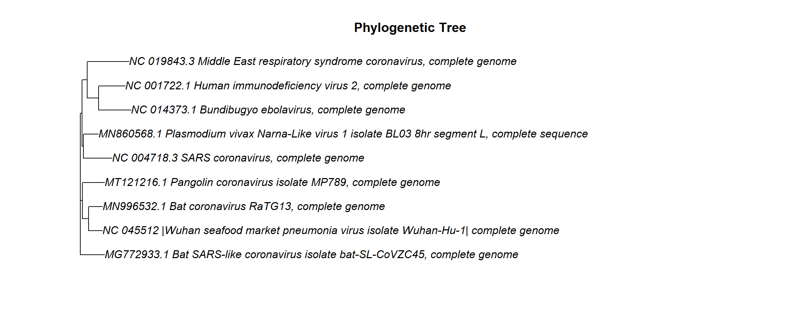

Comparison of whole genome sequences provides a highly detailed view of how organisms are related to each other at the genetic level. I have considered a few criteria to compare the composition of the selected coronaviruses.
Oligonucleotide composition
GC content
Oligonucleotide composition
An oligonucleotide is a contiguous string of a small number of nucleotides. In computational terms, we define oligonucleotides as k-mers (words of size k). In this comparison, I have considered 3-mers (also known as trimers of trinucleotides) and their composition (trinucleotide composition). There are 32 (4³/2) distinct 3-mers. We obtain the normalised frequencies of each distinct trinucleotide by counting the number of occurrences of that trinucleotide and dividing by the total number of trinucleotides. We normalise these counts to avoid any unevenness caused due to different lengths of sequences.
Normalized frequency of kᵢ = Number of occurrences of kᵢ / total number of k-mers (where kᵢ is the iᵗʰ k-mer)
The oligonucleotide composition is conserved within microbial species and varies between species
GC content
GC content (or guanine-cytosine content) is the percentage of nucleotides in a sequence that are either guanine or cytosine.
GC content = (G + C) / (A + G + C + T) * 100
The GC content is also believed to vary between different species
Initialize the trimers and tetramers
trimers <- c("AAA", "AAC", "AAG", "AAT", "ACA", "ACC", "ACG", "ACT", "AGA", "AGC", "AGG", "ATA", "ATC", "ATG", "CAA", "CAC", "CAG", "CCA","CCC","CCG","CGA","CGC","CTA","CTC","GAA","GAC","GCA","GCC","GGA","GTA","TAA","TCA")
tetramers <- c('AAAA','AAAC','AAAG','AAAT','AACA','AACC','AACG','AACT','AAGA','AAGC','AAGG','AAGT','AATA','AATC', 'AATG','AATT','ACAA','ACAC','ACAG','ACAT','ACCA','ACCC','ACCG','ACCT','ACGA','ACGC','ACGG','ACGT',
'ACTA','ACTC','ACTG','AGAA','AGAC','AGAG','AGAT','AGCA','AGCC','AGCG','AGCT','AGGA','AGGC','AGGG',
'AGTA','AGTC','AGTG','ATAA','ATAC','ATAG','ATAT','ATCA','ATCC','ATCG','ATGA','ATGC','ATGG','ATTA',
'ATTC','ATTG','CAAA','CAAC','CAAG','CACA','CACC','CACG','CAGA','CAGC','CAGG','CATA','CATC','CATG',
'CCAA','CCAC','CCAG','CCCA','CCCC','CCCG','CCGA','CCGC','CCGG','CCTA','CCTC','CGAA','CGAC','CGAG','CGCA','CGCC','CGCG','CGGA','CGGC','CGTA','CGTC','CTAA','CTAC','CTAG','CTCA','CTCC','CTGA','CTGC','CTTA','CTTC','GAAA','GAAC','GACA','GACC','GAGA','GAGC','GATA','GATC','GCAA','GCAC','GCCA','GCCC','GCGA','GCGC','GCTA','GGAA','GGAC','GGCA','GGCC','GGGA','GGTA','GTAA','GTAC','GTCA','GTGA','GTTA','TAAA','TACA','TAGA','TATA','TCAA','TCCA','TCGA','TGAA','TGCA','TTAA')Define an oligo counter function
oligo_counter <- function(gs_vector,oligo_collection,oligo_len){
i <- oligo_len
j <- 0
counter <- c()
len_gs_vector <- length(gs_vector)
for (i in i:len_gs_vector)
{ j <- 0
temp_extract <- c()
for ( j in 1:oligo_len-1)
{
temp_extract <- c(temp_extract,gs_vector[c(i-j)])
#print(temp_extract)
}
curr_seq <- paste(temp_extract ,collapse='')
#print(curr_seq)
k <- 1
# Merge cs into single string
for (k in k:length(oligo_collection))
{
if (curr_seq == oligo_collection[k])
{
counter <- c(counter, oligo_collection[k])
}
}
}
a <- table(counter)
Seq <- as.data.frame(a)
}Read and vectorize sequences one by one
library(seqinr)
covid <- read.fasta("datasets_fasta/cov2.fasta",forceDNAtolower = FALSE)
SARS <- read.fasta("datasets_fasta/sars.fasta",forceDNAtolower = FALSE)
Mers <- read.fasta("datasets_fasta/mers.fasta",forceDNAtolower = FALSE)
Bat_sars <- read.fasta("datasets_fasta/BAT_SARS.fasta",forceDNAtolower = FALSE)
Bat_RaTG13 <- read.fasta("datasets_fasta/bat_RaTG13.txt",forceDNAtolower = FALSE)
hiv <- read.fasta("datasets_fasta/hiv2.fasta",forceDNAtolower = FALSE)
malaria <- read.fasta("datasets_fasta/malariae.fasta",forceDNAtolower = FALSE)
Pangolin <- read.fasta("datasets_fasta/pangolin.txt",forceDNAtolower = FALSE)
Bat_SL_CoVZC45 <- read.fasta("datasets_fasta/bat-SL-CoVZC45.txt",forceDNAtolower = FALSE)Convert first sequence into vector
covid_seq <- unlist(covid[[1]][1:length(covid[[1]])])
sars_seq <- unlist(SARS[[1]][1:length(SARS[[1]])])
mers_seq <- unlist(Mers[[1]][1:length(Mers[[1]])])
bat_seq <- unlist(Bat_sars[[1]][1:length(Bat_sars[[1]])])
bat_ratg13_seq<- unlist(Bat_RaTG13[[1]][1:length(Bat_RaTG13[[1]])])
hiv_seq <- unlist(hiv[[1]][1:length(hiv[[1]])])
malaria_seq <- unlist(malaria[[1]][1:length(malaria[[1]])])
Pangolin_seq <- unlist(Pangolin[[1]][1:length(Pangolin[[1]])])
Bat_SL_CoVZC45_seq <- unlist(Bat_SL_CoVZC45[[1]][1:length(Bat_SL_CoVZC45[[1]])])Calculate trimer count of all
covid_tri <- oligo_counter(covid_seq ,trimers,3)
sars_tri <- oligo_counter(sars_seq ,trimers,3)
mers_tri <- oligo_counter(mers_seq ,trimers,3)
bat_tri <- oligo_counter(bat_seq ,trimers,3)
bat_rat_tri <-oligo_counter(bat_ratg13_seq,trimers,3)
hiv_tri <- oligo_counter(hiv_seq ,trimers,3)
malaria_tri <- oligo_counter(malaria_seq ,trimers,3)
pangolin_tri<- oligo_counter(Pangolin_seq,trimers,3)
Bat_CovZC45_tri <- oligo_counter(Bat_SL_CoVZC45_seq,trimers,3)Calculate tetramer count of all
covid_tetra <- oligo_counter(covid_seq ,tetramers,4)
sars_tetra <- oligo_counter(sars_seq ,tetramers,4)
mers_tetra <- oligo_counter(mers_seq ,tetramers,4)
bat_tetra <- oligo_counter(bat_seq ,tetramers,4)
bat_rat_tetra <- oligo_counter(bat_ratg13_seq,tetramers,4)
hiv_tetra <- oligo_counter(hiv_seq ,tetramers,4)
malaria_tetra <- oligo_counter(malaria_seq ,tetramers,4)
pangolin_tetra <- oligo_counter(Bat_SL_CoVZC45_seq,tetramers,4)
Bat_CovZC45_tetra <- oligo_counter(Bat_SL_CoVZC45_seq,tetramers,4)Merge tetramers Rename columns and normalize Normalised freqeuncy of k? = Number of occurrences of k? / total number of k-mers
tetramer_merge<- cbind(covid_tetra,sars_tetra$Freq,mers_tetra$Freq,bat_tetra$Freq,bat_rat_tetra$Freq,hiv_tetra$Freq,malaria_tetra$Freq,pangolin_tetra$Freq,Bat_CovZC45_tetra$Freq)
tetramer_merge[,-1] = apply(tetramer_merge[,-1],2,function(x){x/sum(x)})
names(tetramer_merge)[1]<- "tetramers"
names(tetramer_merge)[2]<- "cov"
names(tetramer_merge)[3]<- "sars"
names(tetramer_merge)[4]<- "mers"
names(tetramer_merge)[5]<- "bat"
names(tetramer_merge)[6]<- "bat_ratg"
names(tetramer_merge)[7]<- "hiv"
names(tetramer_merge)[8]<- "mal"
names(tetramer_merge)[9]<- "pangolin"
names(tetramer_merge)[10]<- "Bat_CovZC45"only for 5 genomes
tetramer_merge_5<- data.frame(tetramers=tetramers,cov=tetramer_merge$cov,sars=tetramer_merge$sars,bat_ratg=tetramer_merge$bat_ratg,pangolin=tetramer_merge$pangolin,Bat_CovZC45=tetramer_merge$Bat_CovZC45)Merge Trimers Rename columns and normalize Normalised freqeuncy of k? = Number of occurrences of k? / total number of k-mers
trimers_merge <- cbind(covid_tri,sars_tri$Freq,mers_tri$Freq,bat_tri$Freq,bat_rat_tri$Freq,hiv_tri$Freq,malaria_tri$Freq,pangolin_tri$Freq,Bat_CovZC45_tri$Freq)
trimers_merge[,-1] = apply(trimers_merge[,-1],2,function(x){x/sum(x)})
names(trimers_merge)[1]<- "trimers"
names(trimers_merge)[2]<- "cov"
names(trimers_merge)[3]<- "sars"
names(trimers_merge)[4]<- "mers"
names(trimers_merge)[5]<- "bat"
names(trimers_merge)[6]<- "bat_ratg"
names(trimers_merge)[7]<- "hiv"
names(trimers_merge)[8]<- "mal"
names(trimers_merge)[9]<- "pangolin"
names(trimers_merge)[10]<- "Bat_CovZC45"only for 5 genomes
trimer_merge_5 <- data.frame(trimers=trimers,cov=trimers_merge$cov,sars=trimers_merge$sars,bat_ratg=trimers_merge$bat_rat,pangolin=trimers_merge$pangolin,Bat_CovZC45=trimers_merge$Bat_CovZC45)
library(reshape2)
plot<- melt(trimers_merge,id.var = "trimers")
plot5 <- melt(trimer_merge_5 ,id.var = "trimers")
plot_tetra <- melt(tetramer_merge,id.var = "tetramers")
plot_tetra_5 <- melt(tetramer_merge_5,id.var = "tetramers")Line plot for trimers using package ggplot2
library(ggplot2)
trimer_line_plot <- ggplot(plot, aes(x = trimers, y = value,group = variable, color = variable)) +
geom_line()+ theme(axis.text.x = element_text(angle = 90))
trimer_line_plotWe can observe that COVID-19 and bat-RaTG13 show very similar trinucleotide composition patterns compared to SARS-CoV and Bat-CoV
Lets plot for only 5 closely related genomes
Plot the graphs for 5 genomes
trimer_line_plot5 <- ggplot(plot5, aes(x = trimers, y = value,group = variable, color = variable)) +
geom_line()+ theme(axis.text.x = element_text(angle = 90))
trimer_line_plot5Line plot for trimers
tetra_line_plot <- ggplot(plot_tetra, aes(x = tetramers, y = value,group = variable, color = variable)) +
geom_line()+ theme(axis.text.x = element_text(angle = 90))
tetra_line_plotThe tetranucleotide (4-mer or tetramer) composition patterns of the different coronavirus genomes. Similar trends to that of 3-mers can be seen
Lets plot only for 5 genomes Plot the graphs for 5 genomes
tetra_line_plot5 <- ggplot(plot_tetra_5, aes(x = tetramers, y = value,group = variable, color = variable)) +
geom_line()+ theme(axis.text.x = element_text(angle = 90))
tetra_line_plot5 GC content analysis
covid_GC <- GC(covid_seq)
covid_GC## [1] 0.3797278sars_GC <- GC(sars_seq)
sars_GC## [1] 0.4076166mers_GC <- GC(mers_seq)
mers_GC## [1] 0.4123643bat_GC <- GC(bat_seq)
bat_GC## [1] 0.4098107bat_ratg13_GC <- GC(bat_ratg13_seq)
bat_ratg13_GC## [1] 0.3803718hiv_GC <- GC(hiv_seq)
hiv_GC## [1] 0.4566078malaria_GC <- GC(malaria_seq)
malaria_GC## [1] 0.4766111pangolin_GC <- GC(Pangolin_seq)
pangolin_GC## [1] 0.3819315Bat_CovZC45_GC <- GC(Bat_SL_CoVZC45_seq )
Bat_CovZC45_GC## [1] 0.3890343According to the GC content values listed above, we can say that COVID-19 and bat-RaTG13,pangolin_Cov and Bat_CoVZC45 have very similar GC content of~37–38%. Plot for GC content
GC_content <- c(covid_GC,sars_GC,mers_GC,bat_GC,bat_ratg13_GC,hiv_GC,malaria_GC,pangolin_GC,Bat_CovZC45_GC)
Names <- c("cov","sars","Mers","Bat","Bat_ratg","hiv","malaria","pangolin","batCoVZC45")
GC_df <- data.frame("Names"= Names,"GC"=GC_content)
GC_df## Names GC
## 1 cov 0.3797278
## 2 sars 0.4076166
## 3 Mers 0.4123643
## 4 Bat 0.4098107
## 5 Bat_ratg 0.3803718
## 6 hiv 0.4566078
## 7 malaria 0.4766111
## 8 pangolin 0.3819315
## 9 batCoVZC45 0.3890343Plot a bar graph
plot_GC <- melt(GC_df,id.var = "Names")
plot_GC <- ggplot(GC_df, aes(x = Names, y = GC)) +
geom_bar(stat = "identity")+ theme(axis.text.x = element_text(angle = 90))
plot_GCPairwise Sequence alignment First use a fixed substitution matrix The sequence alignment is a way of arranging the sequences of DNA/RNA or protein to identify regions of similarity that may be a consequence of functional, structural, or evolutionary relationships between the sequences.
Let’s align other genomes which have proved to be similar with the Covid-19 genome.
covid_str <- paste(covid_seq , collapse="")
sars_str <- paste(sars_seq , collapse="")
ratg_str <- paste(bat_ratg13_seq , collapse="")
pangolin_str <- paste(Pangolin_seq, collapse="")
Bat_CoVZC45_str <- paste(Bat_SL_CoVZC45_seq ,collapse="")
library(Biostrings)
corona_dnastring <- DNAString(covid_str)
sars_dnastring <- DNAString(sars_str)
bat_ratg_dnastring <- DNAString(ratg_str)
pangolin_dnastring <- DNAString(pangolin_str)
Bat_CoVZC45_dnastring <- DNAString(Bat_CoVZC45_str)Lets align the genomes using pairwise alignment The goal of pairwise sequence alignment is to establish a correspondence between the elements in a pair of sequences that share a common property, such as common ancestry or a common structural or functional role. Global alignment is used in cases where we have reason to believe that the sequences are related along their entire length Alignments can be scored with similarity measures. A higher score indicates a better alignment
mat <- nucleotideSubstitutionMatrix(match = 1, mismatch = -1, baseOnly = TRUE)
corona_sars <-
pairwiseAlignment(corona_dnastring,sars_dnastring, substitutionMatrix = mat,
gapOpening = 5, gapExtension = 2)
corona_sars## Global PairwiseAlignmentsSingleSubject (1 of 1)
## pattern: ATTAAAGGTTTATACCTTCCCAGGTAACAAACCA...CAAAAAAAAAAAAAAAAAAAAAAAAAAAAAAAAA
## subject: ATATTAGGTTTTTACCTACCCAGGAAA--AGCCA...CAAAAAAAAAAAAAAAAAAAAAAAA---------
## score: 16961 corona_bat_ratg <-
pairwiseAlignment(corona_dnastring,bat_ratg_dnastring, substitutionMatrix = mat,
gapOpening = 5, gapExtension = 2)
corona_bat_ratg## Global PairwiseAlignmentsSingleSubject (1 of 1)
## pattern: ATTAAAGGTTTATACCTTCCCAGGTAACAAACCA...CAAAAAAAAAAAAAAAAAAAAAAAAAAAAAAAAA
## subject: ---------------CTTTCCAGGTAACAAACCA...CAAAAAAAAAAAAAAAAAAAA-------------
## score: 27442corona_pangolin <-
pairwiseAlignment(corona_dnastring,pangolin_dnastring, substitutionMatrix = mat,
gapOpening = 5, gapExtension = 2)
corona_pangolin## Global PairwiseAlignmentsSingleSubject (1 of 1)
## pattern: ATTAAAGGTTTATACCTTCCCAGGTAACAAACCA...CAAAAAAAAAAAAAAAAAAAAAAAAAAAAAAAAA
## subject: ----------------------------------...----------------------------------
## score: 22912corona_bat_CoVZC45 <-
pairwiseAlignment(corona_dnastring,Bat_CoVZC45_dnastring , substitutionMatrix = mat,
gapOpening = 5, gapExtension = 2)
corona_bat_CoVZC45## Global PairwiseAlignmentsSingleSubject (1 of 1)
## pattern: ATTAAAGGTTTATACCTTCCCAGGTAACAAACCA...CAAAAAAAAAAAAAAAAAAAAAAAAAAAAAAAAA
## subject: ATATTAGGTTTTTACCTTCCCAGGTAACAAACCA...TCGACAAGAAAAAAAAAAAAAAAAAAAAAAAAAA
## score: 22343Perform a multiple sequence alignment Multiple sequence alignment is a tool used to study closely related genes or proteins in order to find their evolutionary relationships and to identify shared patterns among functionally or structurally related genes.
DNA <- readDNAStringSet("D:/work/projects/R/genomic analysis/datasets_fasta/cov2.fasta", format="fasta",
use.names=TRUE)Perform a multiple sequence alignment using package msa
library(msa)
msa <- msaClustalW(DNA,cluster="upgma", gapOpening=1,
gapExtension= 1, maxiters= 16,
substitutionMatrix="clustalw",type="dna",
order=c("aligned", "input"), verbose=FALSE,
help=FALSE)## use DNA substitution matrix: clustalwTurn your alignment into a tree Convert the alignment for the seqinr package
myseq <- msaConvert(msa, type="seqinr::alignment")Generate a distance matrix using seqinr package
d <- dist.alignment(myseq, "identity")generate the tree with the ape package the nj() function allows neighbor-joining tree estimation
library(ape)
myTree <- nj(d)Plot the tree
plot(myTree, main="Phylogenetic Tree") The findings here support the claims made in the recently published paper titled A new coronavirus associated with human respiratory disease in China where the authors state that the genome they have assembled is very closely related to the bat SARS-like coronavirus isolate SARSr-Ra-BatCoV RaTG13. The novel strain has indeed involved and changed since SARS-CoV was discovered in the year 2003.
Phylogenetic analysis showed that the SARS-CoV-2 is most closely related to that of SARSr-Ra-BatCoV RaTG13 followed by Pangolin-Cov and then Bat-SL-CoVZC45.
Pangolin-CoV is the second closest relative of SARS-CoV-2 behind RaTG13 as stated in Probable Pangolin Origin of SARS-CoV-2 Associated with the COVID-19 Outbreak
This finding suggests a distinct evolutionary origin for SARS-CoV-2, possibly as a result of recombination. SARS-CoV-2 might be a recombinant virus, with its genome backbone evolved from Yunnan bat virus–like SARSr-CoVs